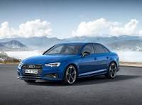

Michael Butchko

My name is Michael Butchko and I'm a Web Developer from Alexandria, VA. Currently enrolled in George Washington University Coding Bootcamp. My interest include music production,
car restoration and the world. I hope to travel to various parts of South & Central America, Eurasia, the Balkins, and South East Asia one day.
I was born in Alexandria, VA and I am currently 26 years old. As a profession I currently work at Swings Coffee Roasters in Alexandria as the head
roaster.In my free time I enjoy listening and producing music and working on my project car. I like to listen to anything from Flume to Doja Cat. I currently
use windows operating system for my system but one day I hope to learn linux. My favorite US cities to are all on the east coast which are New York and Miami.
My favorite music artist include Flume, Beach House, and other pop artist. My favorite sport is basketball and my favorite teams are the Denver Nuggets and the Portland
Trailblazers. My favorite sport to play is actually a winter sport which is snowboarding. My last name was originally spelled as "Buczko". My favorite car companys are Volvo and Audi,
although I think Toyota is the best. I currently own two cars an old 89' Audi 90 (FWD) and an old Volvo S80.